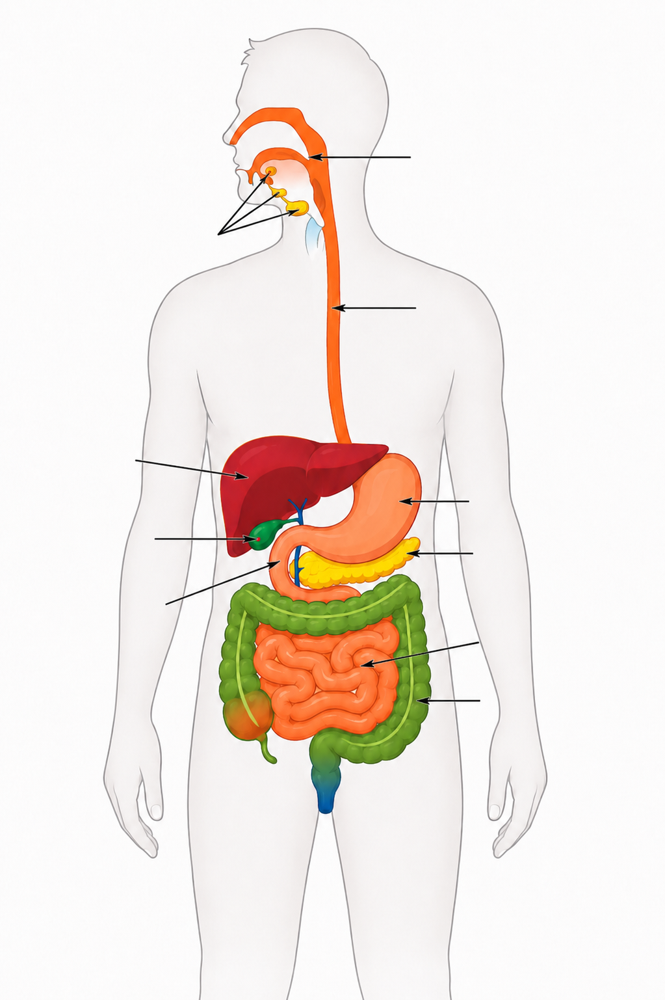
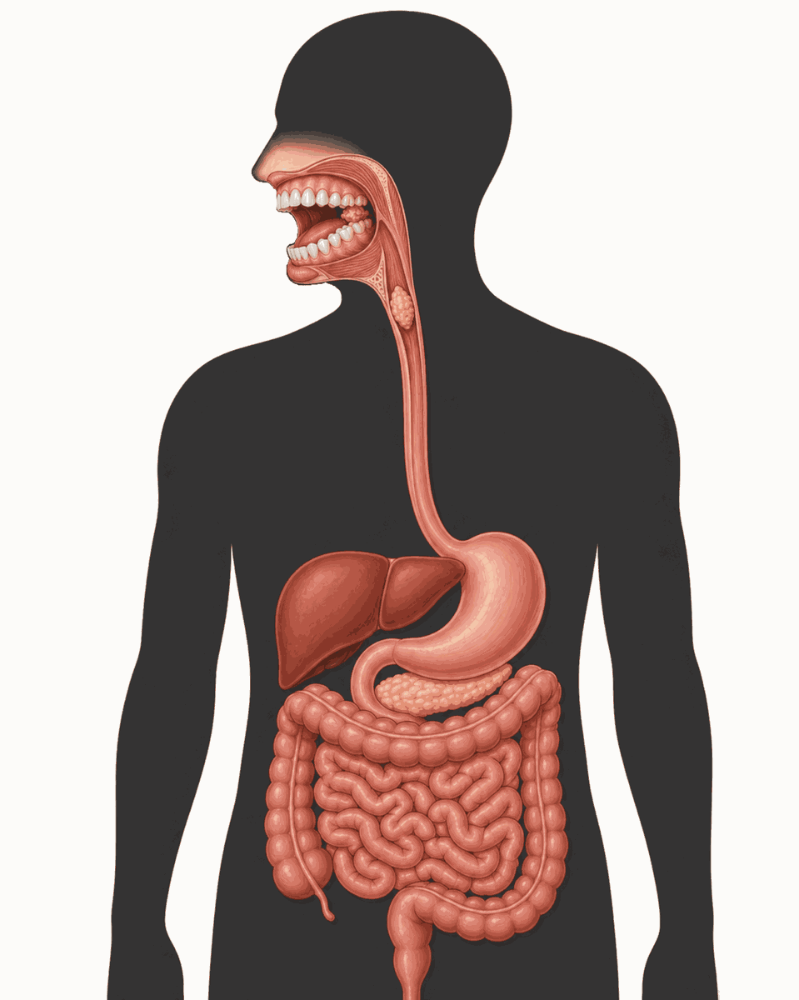

Task 1: Label the overview of the digestive system
Drag the terms to the correct places in the figure.
Human digestive system

Final task: Enzyme activity and pH
Task: Change the pH of the environment and observe at which pH value the activity of each enzyme is highest. As soon as a graph reaches its activity maximum, a labelling field appears at that graph. Then assign a suitable enzyme to this graph. Read the individual information texts again for help.
Interactive Diagram
Processes in the Mouth

Mouth
Task 1: Use the animation to describe how teeth and tongue mechanically prepare the food.Task 2: Explain why a larger surface area makes chemical digestion easier.
Task 3: Looking at Digestion on the Molecular Level
Place the images and terms into the diagram for the current digestive section.
Image Sources
Gut microbiota DataBase Center for Life Science (DBCLS): 202004 Gut microbiota.svg. Wikimedia Commons, CC BY 4.0, adapted.
Locations in the Digestive Tract Bernhard138 after LadyofHats: GIST Lokalisationen.png. Wikimedia Commons, CC BY-SA 3.0, adapted.
Small-intestinal Histology OpenStax: Figure 34 01 11f.png. Wikimedia Commons, CC BY 4.0, adapted.
Additional Images All other images were created using AI.
Copyright and Use:
The self-created simulations, texts, layouts, animations and code components provided on EduBioSim are protected by copyright. Use in school lessons is permitted. Commercial use, redistribution, editing, republication, embedding on other websites or provision on external platforms is not allowed without explicit permission.
Images and materials licensed under CC BY or CC BY-SA are exempt from this. The stated licence terms and source notes apply to those materials.
Bile is produced in the liver. It passes through fine bile ducts to the gallbladder, where it is stored and concentrated. When fatty food components enter the duodenum, bile is released from the gallbladder. There it mixes with the chyme. You will use the simulation to find out why this matters for fat digestion.
You can also carry out this experiment yourself. Test tubes and the required materials are available at the teacher's desk. Instructions for the experiment are on the worksheet.